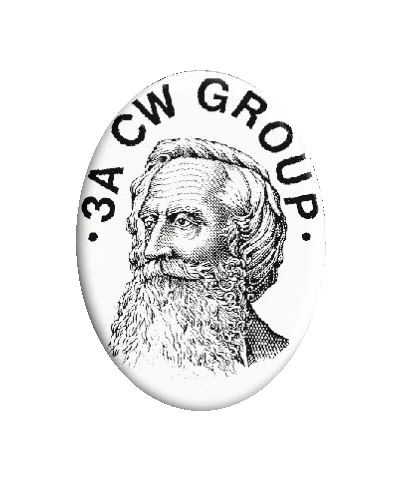

The 3A-CW-GROUP was founded on April 24, 1991, the 200th birthday of Samuel Morse, the father of telegraphy. Its aim is to gather amateur radio operators to practice telegraphy, exchange ideas and information, participate in telegraphy contests, and promote telegraphy activity among amateur radio operators.
The 3A-CW-GROUP is made up of active and associate members. It is run by its manager who functions as the General Secretary and Awards Manager.